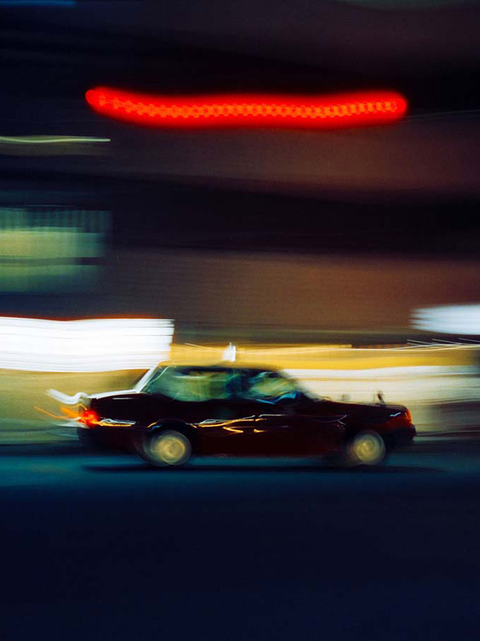

Tema 3
Grundlæggende
UX/UI
Kort
Opsummering
I Tema 3 blev jeg introduceret til arbejdet, før man begynder at kode en hjemmeside. Temaet skulle endnu en gang afsluttes med et større projekt, hvor vi skulle skabe en hjemmeside, men denne gang havde vi helt frie tøjler. Jeg lærte, hvordan man bl.a. udfører research og idéudvikling, altså at komme frem til en idé, og hvordan man så bygger denne idé op. Her begyndte vi også at dokumentere arbejdet i Figma. Idéen bag min side var at skabe en digital håndbog for begynderfotografer. Jeg valgte denne idé, da jeg følte mig komfortabel med min viden om emnet.
Før arbejdet med at kode siden gik i gang, lærte jeg at lave moodboards, opsætte en wireframe, finpudse denne og ud fra dette lave en prototype af siden i Figma. Derudover blev jeg introduceret til nogle af de relevante værktøjer i Figma, såsom at skabe komponenter, så man nemt kan genbruge designs, og ligeledes at skabe styles for farver og tekst. Jeg blev også introduceret til forskellige brugertests, som man kan lave både før og efter, man har kodet siden, for at forbedre idéen og hjemmesiden.
Projektet
Ofte stillede
Spørgsmål
Hvad lærte jeg i løbet af dette tema?
Tema 3 var et utroligt lærerigt forløb. Jeg fik viden og kompetencer inden for idégenerering, research, idéudvikling, Figma-design samt test af sitet før og efter kode. Det var interessant at udvikle et design i Figma, som jeg ikke nødvendigvis vidste, om jeg var i stand til at udføre med CSS, og så at lykkes med det. Jeg lærte, at det også er vigtigt at teste sine idéer på andre, da man kan se sig selv blind i sit emne og sit design, samt at teste den kodede sides performance via Lighthouse, da f.eks. et dårligt optimeret billede kan gøre en stor forskel.
Hvad var min største udfordring?
Jeg havde valgt at udføre en idé, som krævede utroligt meget indhold for at udfylde, men jeg havde ikke indset, at der ikke var behov for, at jeg færdiggjorde siden helt. Jeg brugte derfor utroligt lang tid på at skabe indhold til siden, såsom mange billeder og forklarende tekster. Dette var et utroligt stort stykke arbejde, både da jeg lavede prototypen, men også da jeg senere skulle kode siden.
Hvad ville jeg have gjort anderledes?
Når jeg ser tilbage på, hvordan jeg brugte tiden under arbejdet på Fotohåndbogen, har jeg fortrudt, hvor længe jeg brugte på at udfylde alle siderne med indhold. Jeg havde egentlig aldrig en intention om at føre siden videre efter temaets afslutning, men jeg bliver af og til udfordret af min perfektionisme. Derfor brugte jeg meget lang tid på at skabe indhold til alle undersiderne (28 HTML-filer), hvilket i sidste ende var totalt unødvendigt, da siden i sidste ende ikke skal benyttes af nogen. Jeg havde i stedet kun lavet 1/3 af siderne færdige, så siden kunne testes, og så brugt mere energi på netop at udføre og lære mere omkring brugertest.